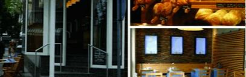

Fühlt euch bitte wie zu Hause! Wir wollen, dass ihr einen super Aufenthalt bei uns habt. Deshalb haben wir hier die wichtigsten Infos zusammengetragen. Bei Fragen oder Anregungen meldet euch jederzeit bei uns – viel Spaß in Fellbach!
Eure Familie Marek
📄 Als PDF herunterladen🔑 Ankommen & Check-in
Das Appartement liegt im Hinterhaus der Bruckstraße 22/1. Der Zugang erfolgt von hinten über den Bruckwiesenweg – dort ist auch euer Parkplatz.
📍 Route in Google MapsSo findet ihr hin
- Über die Bruckstraße fahren. An der Ecke mit dem roten Haus (Restaurant Da Patrizia) in den Bruckwiesenweg abbiegen.
- Dem Bruckwiesenweg nach hinten folgen und an der Gabelung nach links abbiegen. Der Parkplatz liegt auf der linken Seite, direkt hinter dem Haus.
- Vom Parkplatz führt ein kurzer Fußweg zwischen den Häusern zum Eingang.
- Schlüssel: Die Schlüsselbox befindet sich … – den Code bekommt ihr am Anreisetag per Airbnb-Nachricht.
- Die Wohnung liegt im … Stock.


📶 WLAN
🏠 Die Wohnung & Hausregeln
Bitte beachten
- Rauchen ist im gesamten Appartement verboten.
- Keine Partys oder Veranstaltungen.
- Nachtruhe von 22 bis 7 Uhr – im Haus und im Hof wohnen Nachbarn.
Ausstattung
Hier ergänzen wir noch Hinweise zu Küche, Kaffeemaschine, Fernseher, Heizung, Waschmaschine und Mülltrennung.
🛒 Einkaufen, Bäcker & Essen in der Nähe
Google-Bewertungen in Klammern: Anzahl der Rezensionen. Entfernungen ab dem Appartement.
Supermärkte & Drogerie


Bäckereien



Essen & Trinken


✨ Unsere Tipps – passend für euch
👨👩👧 Für Familien
Einer der schönsten Zoos Deutschlands, in einem historischen Park mit Gewächshäusern – auch bei Regen gut, weil viele Häuser überdacht sind.
Hallen- und Freibad mit Rutschen und Saunabereich, gleich in Fellbach. Der Kleinkinderbereich wurde 2026 umgebaut – bitte vorher Öffnungszeiten auf f3-fellbach.de prüfen.
Weinberge direkt vor der Haustür. Der Besinnungsweg hat einen barrierefreien Abschnitt, der auch mit dem Kinderwagen gut geht; oben gibt es einen schönen Blick über Fellbach.
130 Jahre Autogeschichte auf neun Etagen – spannend auch für Kinder und ein guter Plan für Regentage.
Bull Burgerhouse (★ 4,6) liegt 50 m entfernt, die Trattoria Pane e Pino (★ 4,7) mit Terrasse nur 150 m.
💑 Für Pärchen
Fellbach ist Weinstadt: Der Weinweg führt durch die Reben mit Infotafeln zum Weinbau und dem Aussichtspunkt „Blick über Fellbach“. Weinproben vermittelt der i-Punkt am Marktplatz (Tel. 0711 5851-790).
Die klassizistische Kapelle thront über den Weinbergen zwischen Fellbach und Stuttgart – mit einem der schönsten Ausblicke über das Neckartal, besonders zum Sonnenuntergang.
Trattoria Pane e Pino (★ 4,7, 150 m), Irodion (★ 4,6, griechisch) oder ganz bequem nebenan bei Da Patrizia (★ 4,5).
Fachwerk-Altstadt mit Burg und Weinbergen. In der Adventszeit lockt der stimmungsvolle Mittelalter- und Weihnachtsmarkt.
Der erste Fernsehturm der Welt – bei klarem Wetter mit Blick bis zur Schwäbischen Alb.
🧳 Für Alleinreisende & Geschäftsreisende
Vom Bahnhof Fellbach seid ihr mit der S2 oder S3 in wenigen Minuten am Stuttgarter Hauptbahnhof – Schlossplatz, Königstraße, Markthalle und Staatsgalerie liegen dann direkt vor euch.
Zwei Pflichtbesuche für Auto-Fans, beide gut allein in 2–3 Stunden zu erkunden.
Rundtour vom Rathaus über den Kappelberg durch Wein und Wald zum Aussichtsturm – ca. 13,7 km, rund 4 Stunden. Ideal, um nach einem Arbeitstag den Kopf freizubekommen (eine kürzere Variante sind ca. 8,7 km).
Maultaschen und Kässpätzle im Wirthshaus Zum Kuckuck (★ 4,4, 747 Bewertungen) oder im Fellbacher Tröpfle (★ 4,4) – beide gemütlich, auch allein.
🎉 Veranstaltungen in Fellbach & Umgebung
Stand: 22.11.2026 · Termine ohne Gewähr – bitte vor dem Besuch beim Veranstalter prüfen.
- 28.11.–22.12.2026Märchenhafter Fellbacher Weihnachtsmarkt
Rund um Rathaus und Lutherkirche, mit Bühnenprogramm und Angeboten für Kinder. Mo–Mi 16–20 Uhr, Do–So 12–20 Uhr, Eintritt frei.Fellbach Innenstadt · ca. 10 Min. zu Fuß - 25.11.–23.12.2026Stuttgarter Weihnachtsmarkt
Einer der ältesten und größten Weihnachtsmärkte Europas, mit festlich geschmückten Dächern der Buden.Stuttgart Innenstadt · mit der S-Bahn wenige Minuten - 24.11.–22.12.2026Esslinger Mittelalter- & Weihnachtsmarkt
Gaukler, Handwerk und Glühwein in der Fachwerk-Altstadt. Täglich 11–20:30 Uhr, Fr & Sa bis 21:30 Uhr.Esslingen am Neckar · ca. 20 Min. - 24.11.–22.12.2026Ludwigsburger Barock-Weihnachtsmarkt
Rund 150 Stände vor barocker Kulisse auf dem Marktplatz.Ludwigsburg · ca. 25 Min. - 07.02.2027 · 19 UhrSchwanensee – Grand Classic Ballet
Klassisches Ballett auf Wintertournee.Schwabenlandhalle Fellbach - 13.03.2027Azzurro – Die Italo-Pop-RevueSchwabenlandhalle Fellbach
- 20.03.2027 · 13 UhrBobby & Max – Live-Hörspiel (für Kinder)Schwabenlandhalle Fellbach
🚆 Unterwegs mit Bus & Bahn
- Bus: Haltestelle Fellbach Cannstatter Platz – Busse Richtung Bahnhof
- Stadtbahn (U-Bahn): Fellbach Lutherkirche – U1 Richtung Stuttgart
- S-Bahn: Fellbach Bahnhof – S2 / S3 Richtung Stuttgart Hbf, Flughafen bzw. Schorndorf / Backnang
Tickets und Fahrpläne gibt es in der App VVS oder DB Navigator. Mit dem Deutschlandticket fahrt ihr im gesamten Nahverkehr.
Fahrplanauskunft VVS ↗
👋 Abreise
Check-out bis 11:00 Uhr. Bevor ihr geht, bitte kurz:
Wir hoffen, ihr hattet eine schöne Zeit! Über eine Bewertung auf Airbnb freuen wir uns sehr. ⭐
☎️ Kontakt & Notfall
Bei Fragen erreicht ihr uns über die Airbnb-App oder telefonisch:
Notrufnummern
- Feuerwehr & Rettungsdienst: 112
- Polizei: 110
- Ärztlicher Bereitschaftsdienst: 116 117
- Apotheken-Notdienst: aponet.de/notdienst